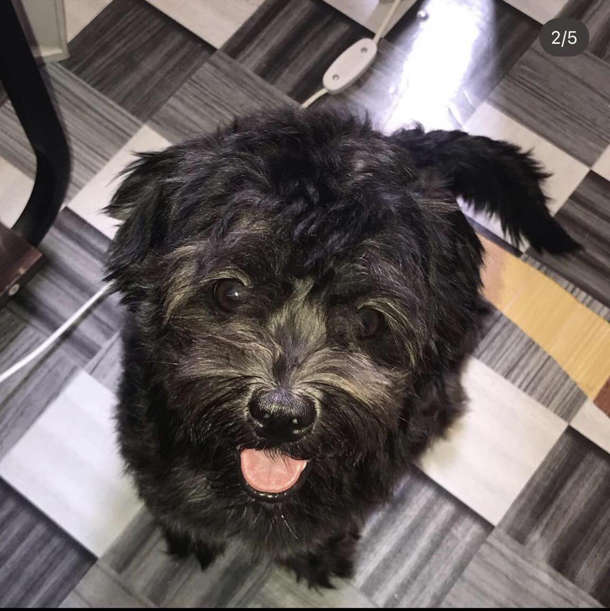
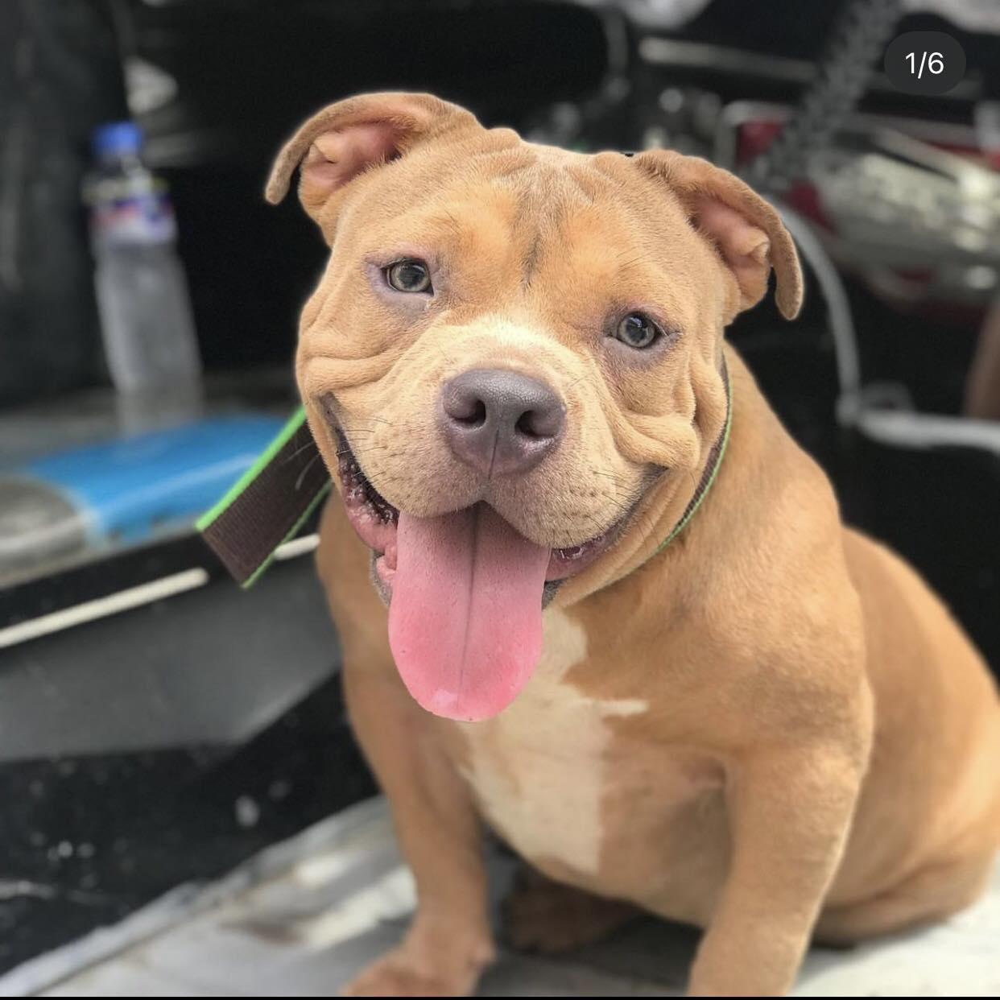
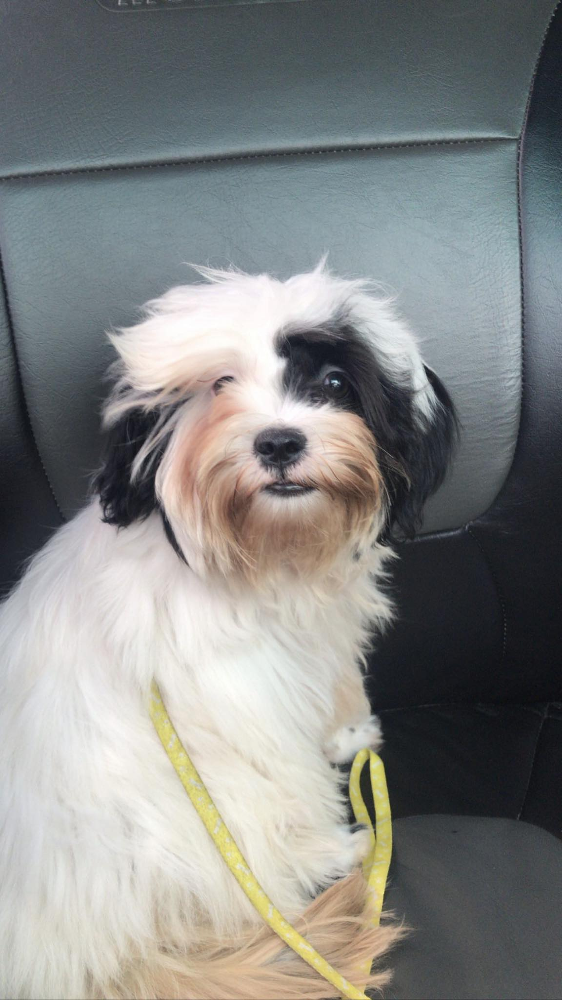
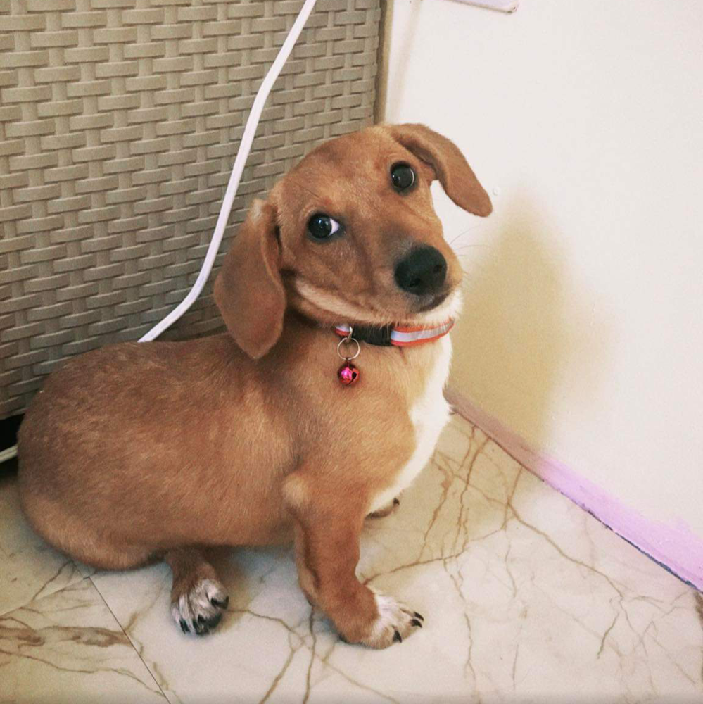

1. Lhasa Apso
This is Ohgong. He's 4 years old. He is a boy lhasa apso dog. The Lhasa Apso is an ancient breed, developed in Tibet from the Tibetan terrier and similar herding-type Tibetan dogs. The conversion of Tibet to Buddhism in the 7th century AD established the Lhasa Apso as a definitive breed.
2. Shih Tzu

This is Kira. She's 2 years old. She is a girl Shih Tzu. The Shih Tzu is a toy dog or pet dog breed originating from Tibet and believed to be bred from the Pekingese and the Lhasa Apso. Shih Tzus are known for their short snouts and large round eyes, as well as their long coat, floppy ears, and short and stout posture.
3. Shih Tzu
This is Kiyo. He passed away due to parvo disease. The Shih Tzu is a toy dog or pet dog breed originating from Tibet and believed to be bred from the Pekingese and the Lhasa Apso. Shih Tzus are known for their short snouts and large round eyes, as well as their long coat, floppy ears, and short and stout posture.
4. Standard American Bully
This is Khiefer. He's 2 years old. He is a male american bulldog. The American Bully is a modern breed of dog that was developed as a companion dog, and originally standardized and recognized as a breed in 2004 by the American Bully Kennel Club. Their published breed standard describes the dog as giving the "impression of great strength for its size".
5. Pocket American Bulldog

This is Koda. She's 2 years old. He is a female american bulldog. The American Bully is a modern breed of dog that was developed as a companion dog, and originally standardized and recognized as a breed in 2004 by the American Bully Kennel Club. Their published breed standard describes the dog as giving the "impression of great strength for its size".
6. Pomeranian
This is Sasha. She's 1 years old. She is a female Pomeranian. The Pomeranian is a breed of dog of the Spitz type that is named for the Pomerania region in north-west Poland and north-east Germany in Central Europe. Classed as a toy dog breed because of its small size, the Pomeranian is descended from larger Spitz-type dogs, specifically the German Spitz.
7. Pomeranian
This is Lexi. She's 1 years old. She is a female Pomeranian. The Pomeranian is a breed of dog of the Spitz type that is named for the Pomerania region in north-west Poland and north-east Germany in Central Europe. Classed as a toy dog breed because of its small size, the Pomeranian is descended from larger Spitz-type dogs, specifically the German Spitz.
8. Standard American Bulldog
This is Kesya. She's 1 years old. He is a female american bulldog. The American Bully is a modern breed of dog that was developed as a companion dog, and originally standardized and recognized as a breed in 2004 by the American Bully Kennel Club. Their published breed standard describes the dog as giving the "impression of great strength for its size".
9. Shih Tzu

This is Kora. She's 1 years old. He is a female Shih Tzu. Kira's daughter. The Shih Tzu is a toy dog or pet dog breed originating from Tibet and believed to be bred from the Pekingese and the Lhasa Apso. Shih Tzus are known for their short snouts and large round eyes, as well as their long coat, floppy ears, and short and stout posture.
10. American Bulldog
This is Kiyo, Tan, and Angel. Kesya's Daughter. The American Bully is a modern breed of dog that was developed as a companion dog, and originally standardized and recognized as a breed in 2004 by the American Bully Kennel Club. Their published breed standard describes the dog as giving the "impression of great strength for its size".
11. Dachshunds

This is Sonya, A 4 months old female dachshund. The dachshund, also known as the wiener dog, badger dog, doxie, and sausage dog, is a short-legged, long-bodied, hound-type dog breed. The dog may be smooth-haired, wire-haired, or long-haired. Coloration varies. The dachshund was bred to scent, chase, and flush out badgers and other burrow-dwelling animals.